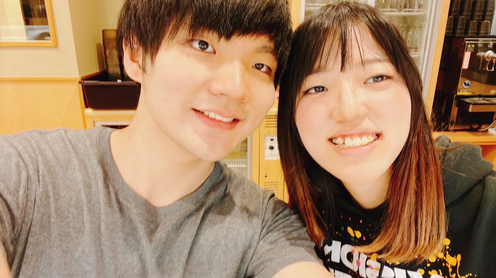

Exclusive Interview
The Genius Who Defies Definition
言語処理IQが測定不能（カンスト）を記録。幼少期より規格外の知性を証明。
ケンブリッジ大学への留学、鉄緑会での研鑽。英検1級には上位3%という圧倒的成績で合格。
Gemini評価業務において平均時給2万円を叩き出す、知のプロフェッショナル。
「体育の授業を受けたくない」という独自の動機から、日本一の法科大学院に飛び級合格（40分余らせての完勝）。
恋愛歴では、元カノに30万円を盗まれるという災難や、警察が介入するほどの壮絶な別れを経験。 波乱万丈なエピソードさえも、彼のカリスマ性を形作る一部となっている。